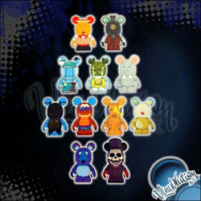

News
August 24th, 2011
Park 9 Series Reveal Possible Chaser Spoiler
In a bit of a surprising move. Park Series 9 pins were allegedly stocked and accidentally released on the West Coast and have already been pulled from store shelves. The series revealed 10 of the 12 figures that will be part of the blind box series, and to the right you can see the 11 designs expected to be released in 3" vinyl figure form. All but the Dole Whip design will be featued in pin form.

Pins from the unreleased series Park 9.